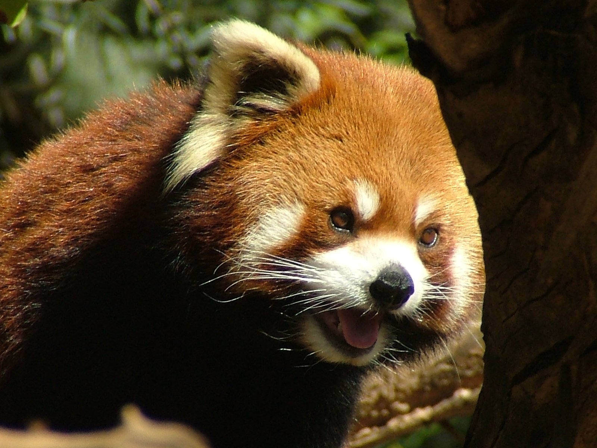
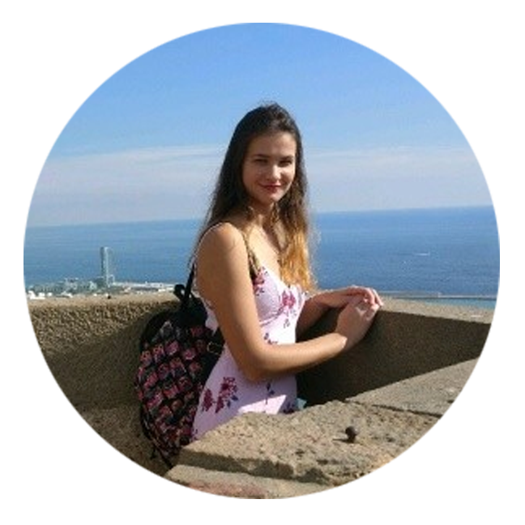
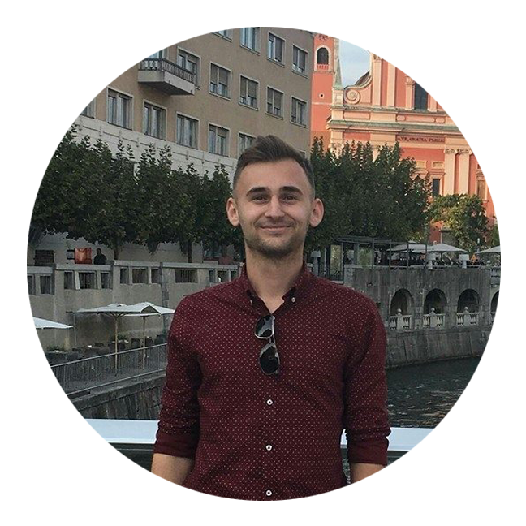

FAKE NEWS EXPLAINED
CHROME EXTENSION "FAKE NEWS"
Against trolling, falsifying and deceiving news
Red panda
To see why we rated the article #placeholderForArticleTitle with score #placeholderForScore, follow this link.
Where do we find #placeholderForAnimal?
We hate people selling us lies, so we decided to call them out on their bullshit. With our extension, anyone can find out what news are worthy of their time and who is only "clickbaiting" them. Let's put an end to media exaggeration, sensational headlines and overall low quality of the content just by clicking a button.
Historical assesment
Tuki bo pregled gibanja števila živali?
Regions of occurence
- title bias 5%
- content bias 60%
- domain bias 15%
- image scam 20%
- user reporting: for every user flagging the article as fake news, we take away 0.1% of its “trustworthiness” up to max 40% (at least 400 users)
Threats
We would like to give thanks to the below APIs and libraries that we have used, for helping us to create a Fake News Extension.
- MachineBox's Fakebox for analyzing the article.
- Infringement Report for finding webpages where same photos that are found in the article, are already used.
- Mercury Postlight for transforming analysed article into clean text.
The team
|

|
Patricija Brečko is a 22 year old student of Faculty of Computer and Information Science who likes to work with data, even more so in a good team. She drinks a lot of coffee and wears slippers. LinkedIn profile |
|
|
Neža Đukić is a 22 year old aquarius and Multimedia student. She is a coffee addict who likes to talk too much - her enthusiasm sometimes gets her carried away. LinkedIn profile |
|
|
Anja Hrovatič is a 23 year old Multimedia student who loves dolphins and color blue, appreciates good coffee and "kids because she loves". LinkedIn profile |
|

|
Luka Zakšek is a 21 year old Multimedia student. He likes to do sports, listen to different music genres and gets reborn every summer. LinkedIn profile |